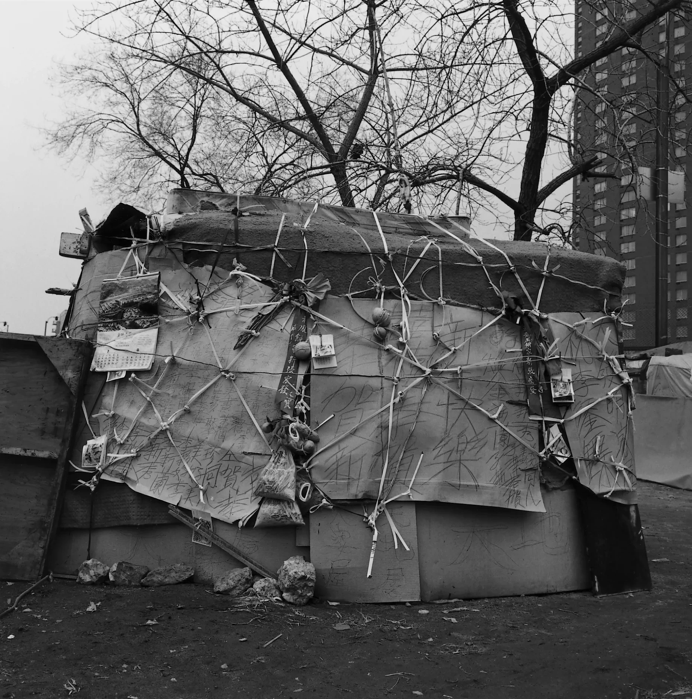
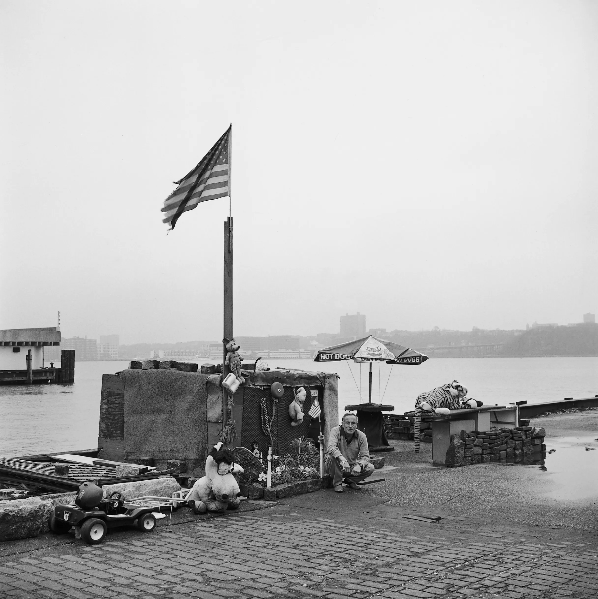

Published Books
1993
Transitory Gardens, Uprooted Lives
Yale University Press
by Diana Balmori and Margaret Morton
148 pages, 112 photographs
1995
The Tunnel
Yale University Press
Schirmer/Mosel (German edition)
147 pages, 58 photographs
2000
Fragile Dwelling
Aperture Foundation
148 pages, 87 photographs
2004
Glass House
Penn State University Press
151 pages, 73 photographs
2014
Cities of the Dead: The Ancestral Cemeteries of Kyrgyzstan
University of Washington Press
110 pages, 75 photographs

Transitory Gardens, Uprooted Lives
Diana Balmori (1932-2016), a friend and mentor of Morton’s, was a landscape architect and landscape historian. Combining Balmori’s text with Morton’s photographs of gardens built by unhoused New Yorkers, the book offers a provocative thesis: Like traditional gardens, these spaces are designed for pleasure, social activity or private retreat. Unlike traditional gardens, “[they] represent a new way to consider the power of gardens. . . In the reuse of nearly everything discarded, the sparing use of water, and the economical treatment of space, these gardens speak the language of our time.”
“The photographs and text convey . . . a demonstration of irrepressible yearning for serenity, creativity and
individuality; a gift to us of rare empathy and originality by Balmori and Morton.”
—Jane Jacobs


The Tunnel
The Tunnel documents a residential community that lived in an abandoned Amtrak tunnel beneath Riverside Park beginning in the 1980s. It was unknown to the public until 1991, when Amtrak began planning to reopen the tunnel for train service. Morton photographed the community between 1991 and 1996, when it closed. Her book combines photographs with first-person accounts by the residents, a format that she retained in Fragile Dwelling and Glass House. Morton worked with the Coalition for the Homeless to help evicted residents into supportive housing.
“A powerful metaphor of America, Margaret Morton’s The Tunnel shows the beauty of
people we shun, and the light in a world we cannot see."
—Danny Lyon


Fragile Dwelling
Published in 2000, Fragile Dwelling is the survey of Morton’s documentation of Manhattan’s homeless communities that she first envisioned in 1990. The book traverses several temporary encampments, which by 1997 were demolished by city authorities. They include Bushville, in a vacant lot at East 4 th Street and Avenue D; The Hill, at the base of the Manhattan Bridge in Chinatown; and encampments along the shorelines of the East and Hudson Rivers.
“[Morton] shows the places [people] created as environments nested within and
pressing against the larger environment of the city, with all its emblems of indifference
and abstract power. She allows her subjects the dignity of presenting themselves as
artists in their own right. . . “
—Alan Trachtenberg (Introduction)




Glass House
Glass House documents a community of 35 squatters, many still in their teens, who occupied a derelict glass factory down the street from Morton’s apartment in the East Village. Unable or unwilling to return to their families, they renovated the building and devised a strict set of rules to organize their lives. The book ends with a detailed account of the police raid that put them onto the streets. Ten years after the eviction, Morton was contacted by a Glass House resident, which inspired her to publish the book.
“Margaret Morton’s Glass House . . . has the momentum of narrative. The characters come fully alive and most become quite
attaching. Even if we’ve known all along that the story will end with a violent eviction, by the time the end comes it is
still shocking.”
—Lucy Sante
In 2025, Glass House was the subject of an exhibition at Interference Archive, a volunteer-run archive for social movements in Brooklyn, New York.


Cities of the Dead:
The Ancestral Cemeteries of Kyrgyzstan
While driving through Kyrgyzstan on a theater project with Yara Arts Group in 2006, Morton sighted an ancestral cemetery, which she initially perceived as a distant city. Transfixed by the illusion, she extended her six-week visit to ten weeks and returned in 2007 and 2008. Cities of the Dead presents Morton’s hallucinatory photographs with explanatory essays by specialists in the history of Islamic architecture and the region from ancient through Soviet times.


The Farley
The Farley is a portrait of the 1.4 million square-foot Farley Post Office before a portion of it was gutted and repurposed as Moynihan Train Station, first proposed by Senator Daniel Patrick Moynihan in 1993. Built in 1914, the Post Office on Eighth Avenue between 31st and 32nd Streets was designed by McKim, Mead, and White, the same architects who built the original Pennsylvania Station, demolished in 1963. Two years after New York State purchased the building from the USPS in 2007, the Farley ceased its 24-hour postal operations for the first time in nearly a century, choosing to operate out of other sites around New York City.
Read Morton's essay on The Farley for the Architectural League of New York's Urban Omnibus here.